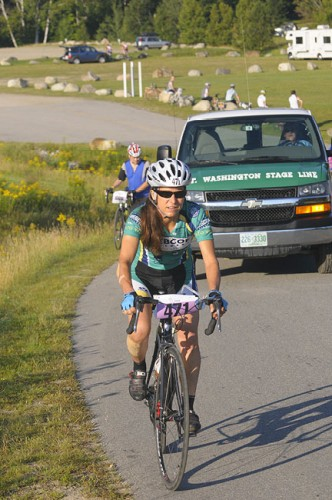
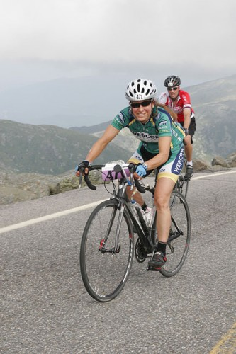

{kind=link}
{kind=link}
{kind=link}
{kind=link}
alison@exerciseforthereader.org (Alison Chaiken)
In The Complete Guide to Climbing (By Bike), author John Summerson wrote about Mount Washington Auto Road Bicycle Hillclimb:
The most difficult road bike hill climb in the U.S. and perhaps the
world, this road is only open to bikes during the annual hill climb
race usually held in August and at times for several hours for a
practice ride shortly before the race. No concession to gradient was
made as it starts out steep and never lets up all the way to the top.
Woot! I had to try it. That meant getting up at 4:45 AM on February 1st, 2009, as the registration opened at 8 AM Eastern Time. In 2008, the 600-person field filled in 7 minutes. The fact that my family lives near Mt. Washington in northern New Hampshire meant that the race could be part of a longer vacation. A friend of my father's told him that the gradient was so steep that cyclists had to stand the entire way. As a Low-Key Hillclimber and veteran of many Almaden Cycle Touring Club "billygoat" hills of gradient greater than 20%, I knew that I would not have to stand for much of an average-12% climb. Nonetheless, the 4725' elevation gain over 7.4 miles was a bit scary, especially when paired with the 22% finish, reminiscent of our local Mt. Diablo's 16% finish. You do have to wonder about an event where the winningest riders in both the men's and women's categories are under long-term ban by the World Anti-Doping Agency.
According to Summerson, Mt. Washington has the toughest 5-mile climb in the U.S., with an average 12.1% slope over that distance. The Angliru featured in the Vuelta a Espana goes up at an average gradient of 10.1% over 7.8 miles, while the infamous L'Alpe d'Huez of the Tour de France rises up 8.4% over 8.1 miles. By comparison, local lung-buster Alba climbs 2050' over 3.9 miles for an average 10% grade, with the fearsome Bohlmann-On Orbit rising 2337' over 4.7 miles for a similar 10%. Mt. Washington thus has about twice the elevation gain of Bohlmann-On Orbit over significantly less than twice the distance. As a frequent climber of these Bay Area hills, I normally ride a 52-39-30 in the front and an 11-27 in the back and definitely had occasion to use my lowest gear at Mt. Washington.
The race was on August 15th, 2009. I flew out to New England on the 13th and stayed with my brother. Jim Chaskin of The Bicycle Outfitter packed my bike up and shipped it, and thanks to help from friend Michele Rae, UPS figured out where it was and delivered it on the 14th. The night before the race, my father, brother and their wives and I stayed over at the Mt. Madison Motel in Gorham, NH.
The morning of the event, I drove out to the Glen View Cafe at the base of the Mountain and had breakfast with a few other participants. Mt. Washington is famous for its bad weather, but August 15th dawned clear and warm. The summit was clearly visible from the base, and riders could see how nearby and high it was!
The race start was amusing because I showed up in my Alto Velo kit, and the P.A. announcer clearly thought I was one of the Webcor women pros. A Colavita rider I spoke to was very friendly as she clearly was wondering why she didn't recognize me. We 500+ riders went off in five flights all initiated by a loud gun. I was in the 4th of 5th flights, presumably based on the estimated time (90 minutes) I submitted.

At the bottom.
Credit:
Philbrick
Photo
As noted in the press coverage, the day was beautiful, and riders were actually hot at the bottom. The road surface was mostly smooth and wide in the first five miles. While I could tell that we were definitely going uphill, the variable 10-15% grade didn't seem any worse than going up Hicks or Montebello, because it wasn't. There were two kilometer-long stretches averaging > 14%, on one of which I did stand a bit, but for the most part I was taking it easy and conserving my energy. I was pretty nervous when we hit the dirt/gravel section at about mile 5, but since there had been just a bit of recent rain, the roadbed was packed and traction was good. I rode on the embedded-gravel section in the center of the road since I was worried about slipping my traction wheel when the dirt turned up, but then I was nervous about flatting on some of the sharper-looking rocks. Everyone definitely breathed a sigh of relief when they got back on pavement at about mile 6.5.

About halfway.
Credit:
Philbrick
Photo
By this point, the road was a bit narrow and twisty. The views were spectacular since the day was so clear: 360-degree panoramas of all of the craggy and green Presidential Range. By this point, I was having a fabulous time and knew I was going to make it all the way to the top, so I picked up the pace a wee bit. The whole way I was passing riders who were resting or walking, and now I started passing folks who were still riding. As we approached the summit, we entered some mist.
Final climb.
Credit:
Philbrick
Photo
In the last mile, I started to go past a lot of spectators. There had been scattered fans all the way up, but as we got into the last half-mile, real crowds were lining the road. At about a quarter-mile out, I saw that my brother had chalked my name on the roadbed! That really surprised me, and I clicked up a couple of a gears and accelerated, which caused a couple of spectators to hoot encouragement at me.
View of the last wall just before the road narrows and the pavement deteriorates.
I came around the final big turn and saw the last wall, which is as steep as Cat's Hill, but 50 yards long, with two hairpin turns and several big potholes. If those challenges weren't enough, I saw that the road was only 12-15' wide, and at the edge were not barriers or course marshals, but spectators with flailing arms and baby strollers. Yikes! I was reminded of photos of Liege-Bastogne-Liege or the Tour of Flanders:
The Muur van Geraardsbergen in Ronde van Vlaanderen (Tour of Flanders) for women. At least there's a rope between the riders and the crowd. Photo taken by Lander Vandergucht.
I had plenty of energy to put on a sprint to the finish, but I was scared. I stay seated, and moving my eyes rapidly between the spectators and the potholes, ground up the final climb. I bobbled in a giant pothole but did not go over. As I hit the first hairpin, I heard my family screaming, "GO ALISON! GO!" They must have been inches away from me although I hadn't seen them.
Okay, it was hard.
Later on my family told me that: a) the woman's overall winner Sue Schlatter had fallen on the same pothole while standing and pumping; and b) spectators had knocked over a unicyclist who was insane enough to ride up Mt. Washington. I'm glad I was conservative on the final bit as, hey, I already had road rash at the start!
I rolled around the final bend and over the finish to have attendants grab me, put a blanket over me, and hand me water. Awesome.
I was 12/17 in my W45-50 category, which includes the top two women's finishers. In retrospect, I could have gone about 10 or 15 minutes faster than my 108-minute finish, but I was nervous about the gravel section and the 22-24% finish and went quite slow at the bottom. My tracklog on Google MyMaps includes my warm-up as well as the race.
After the event, my family gave me a ride down, as racers were not allowed to descend. Hell, a lot of cars are not allowed to drive up!
Half the cars in New England have a sticker.
All in all, the race was a wonderful experience. I forget how beautiful New England is between visits. I totally recommend racing in front of your family even if they are not sports fans.
For contrast, read men's overall winner Phil Gaimon's report.